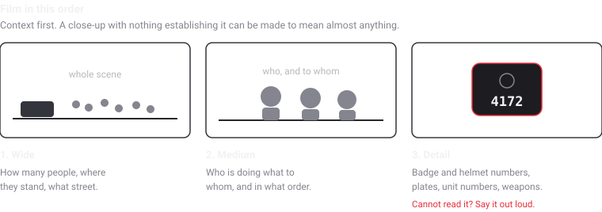
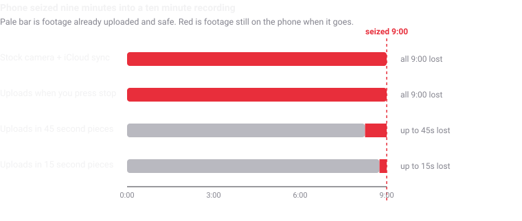

How to film the police, step by step
The eight-step method, and the situation most guides skip entirely.
Almost every guide to filming police assumes you are a bystander watching something happen to someone else. Most people who end up filming police are not bystanders. They are the person pulled over, the passenger, the one answering the door. That situation has different rules, and it is the second half of this page.
If you are a bystander, the companion piece on where to stand, what to capture and what to say goes deeper on positioning and shot order than this one does. Start here for the method; go there for the craft.
The eight steps, in order
Turn off Face ID. Tonight, not later.
Use a passcode of six digits or more as the lock on your phone. US courts have generally drawn a line between compelling a passcode, which is testimony that comes out of your head and runs into the Fifth Amendment, and compelling a face or a thumb, which has often been treated more like taking a fingerprint. The law is unsettled and varies by circuit, but the asymmetry runs against biometrics in exactly the moment it matters.
Learn the emergency gesture too: hold the side button and either volume button for about a second and iOS drops back to passcode entry. It works with the phone still in your pocket.
Start early. Earlier than feels necessary.
Begin the recording while you are still approaching, or the moment you see lights behind you, before the window comes down. The single most contested question in almost every disputed encounter is how it started, and footage that begins thirty seconds in cannot answer it.
Say where and when you are.
In the first few seconds, out loud: the date, the clock time, the street, the nearest cross street or building number. This costs four seconds and makes the recording self-locating. If file metadata is later challenged, or the footage is copied between devices and loses it, your own voice is still on the track.
Hold it where it can be seen.
Openly, in front of you, in one hand. Not palmed, not at your hip, not peeking out of a jacket. An unidentifiable object in a hand is the risk that outranks everything else on this page.
The instinct to hide the phone comes from not wanting to provoke a reaction, which is understandable and is the wrong trade. What you actually want is a phone that is plainly a phone.
Wide, then medium, then detail.
Establish the scene before you chase the close-up. How many officers, how many civilians, what street, who is standing where. Then who is doing what to whom. Only then badge numbers, name tags, plates, unit numbers and any weapon in use.
Under stress, people jump straight to the third one. A close shot of a struggle with no context can be made to mean nearly anything.
Describe, do not characterise.
"Officer in the dark vest moved toward the man in grey" is usable in a way that "this is completely unjustified" is not. The second one is an opinion on your own audio track, and it hands anyone disputing the footage the argument that you arrived with a conclusion and filmed toward it.
This is not about being neutral in your head. It is about the recording staying useful to a lawyer six months later.
If told to move, move, and say so.
Immediately and visibly. Whether the order was lawful is a question for afterwards, in a building, with a lawyer. Refusing on the street is how filming becomes an obstruction charge, and obstruction is the charge that actually gets used.
Tilt the camera down to catch your own feet moving and say "I'm complying, I'm backing up." Now compliance is on the recording rather than in your memory.
Get it off the phone while you are still filming.
This is the step that decides whether any of the previous seven mattered. Footage that only exists on the device survives exactly as long as the device does.

When you are the one being stopped
This is the case the guides skip, and it is the common one. Everything above still applies, but three things change, and they change in ways that matter.
Your hands are now the thing being watched
As a bystander, holding a phone up is the safe option. As the person being stopped, reaching for anything is the risky one. The resolution is to stop holding the phone at all.
Get it into a dashboard or vent mount before the encounter, or set it on the dash face-up, and leave both hands on the wheel. If the recording is already running when the officer arrives, you never have to reach for anything, and there is no moment where your hand disappears from view.
This is the strongest practical argument for a start method that does not need the screen: the iPhone Action Button, a Lock Screen widget, or a spoken Siri phrase all begin a recording without unlocking, opening an app, or looking down. Whatever app you use, set that up in advance, because the moment you are configuring it is the moment you needed it already configured.
Announcing it is a judgment call, not a rule
Bystander guidance often recommends saying "I am recording" out loud, and there are decent reasons for it. When you are the person detained, the calculation is less obvious, and reasonable people who do this professionally disagree.
What is not a judgment call is the legal position: you are not obliged to volunteer it in a one-party consent state, and in the eleven or so all-party consent states the analysis is different but has generally not been read to cover officers performing public duties in public. That question is worked through properly, with the actual cases, on the recording law page.
You will probably be asked to hand the phone over
You are not required to consent to a search of it, and saying so clearly and calmly is worth doing on camera: "I don't consent to a search of my phone." Consent given is very hard to take back later.
A phone can be seized without a warrant in some circumstances and still not be lawfully searched without one, and those are genuinely two different questions. The short version, with the case law, is on the page on whether police can take your phone or delete your video.
The passenger has the easier job. If there are two of you, the passenger films and the driver keeps both hands visible. The passenger has no obligation to produce identification in most states during a routine stop, is not the one being addressed, and can hold a phone without it reading as reaching for something. If you regularly drive with the same person, decide this in advance rather than in the moment.
What actually gets footage lost
Not deletion by an officer, usually. Deleting from someone's phone is both unlawful and rare, partly because it is now well understood to be a spoliation problem for the department itself. The three things that actually lose footage are duller than that.
- The phone stops being available to you. Seized, taken as property during an arrest, dropped, broken, or simply out of your hands for the next eleven hours. The video is still on it. It is not still with you.
- The upload never happened. Photo library sync generally treats an in-progress recording as a file that is not yet eligible to upload, and defers on cellular or low battery besides. So the recording of a nine-minute encounter typically uploads nothing at all until you stop it.
- It was re-encoded before anyone competent saw it. Sending footage through a messaging app or posting it to social media re-compresses the file. The picture survives; the original file does not, and with it goes any hash or metadata that would have made it verifiable.

Witness, which I built and am therefore not a neutral party about, uploads in roughly fifteen-second pieces to a cloud account you own while the recording is still running, and shares each session automatically with one contact you nominate once. There is no server on my end, so there is nothing on my side for anyone to subpoena. It is not the only app that uploads during recording, and I have compared the alternatives including where mine loses.
The first hour afterwards
- Write it down the same day. Times, badge numbers, exact words, what happened just outside frame, who else was present. Contemporaneous notes carry weight that a recollection three weeks later does not.
- Keep the original untouched. Copy it, share the copy, never work on the only version you have.
- Get a second copy to a second person. A lawyer, an organiser, a colleague. Footage in one place is footage waiting to be lost.
- Consider a records request. Body-worn camera footage and dispatch audio are often obtainable, and retention windows can be short, sometimes as little as thirty to ninety days for non-flagged recordings. Asking early costs nothing.
- Think before posting. Faces in a crowd identify people who did not choose to be identified, including people for whom that is dangerous. WITNESS publishes serious ethical guidance on this and it is worth reading before you upload rather than after.
What this page cannot do
It is not legal advice and I am not a lawyer. I am a developer who read a great deal of primary material while building an app, and that is a different thing.
It is written for the United States. Recording law elsewhere differs substantially, sometimes in the opposite direction.
It cannot make a situation safe. A camera is not protection. There are encounters where the correct decision is to put the phone down and leave, and no amount of good technique changes that.
Sources
Technique follows WITNESS, who have trained people to document human rights abuse on video since long before phones could do it. Rights material comes from the EFF, the ACLU and the National Lawyers Guild. All three are better on this than I am; go to them directly.
No connection to WITNESS the organisation, whose name my app unfortunately shares.
Written September 2026. The law and the tactics both change. Nothing here is legal advice.